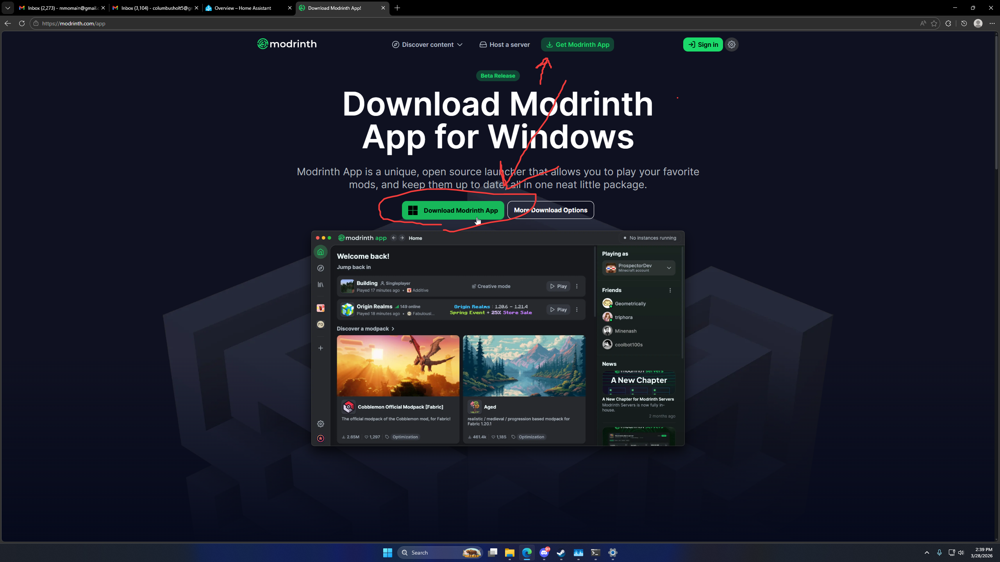
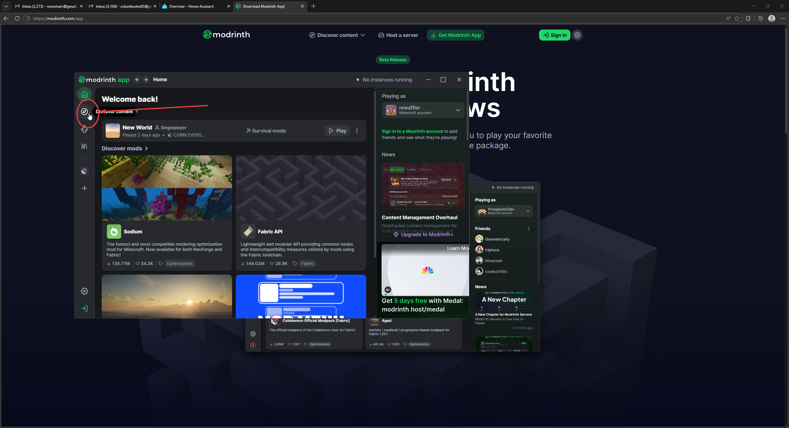
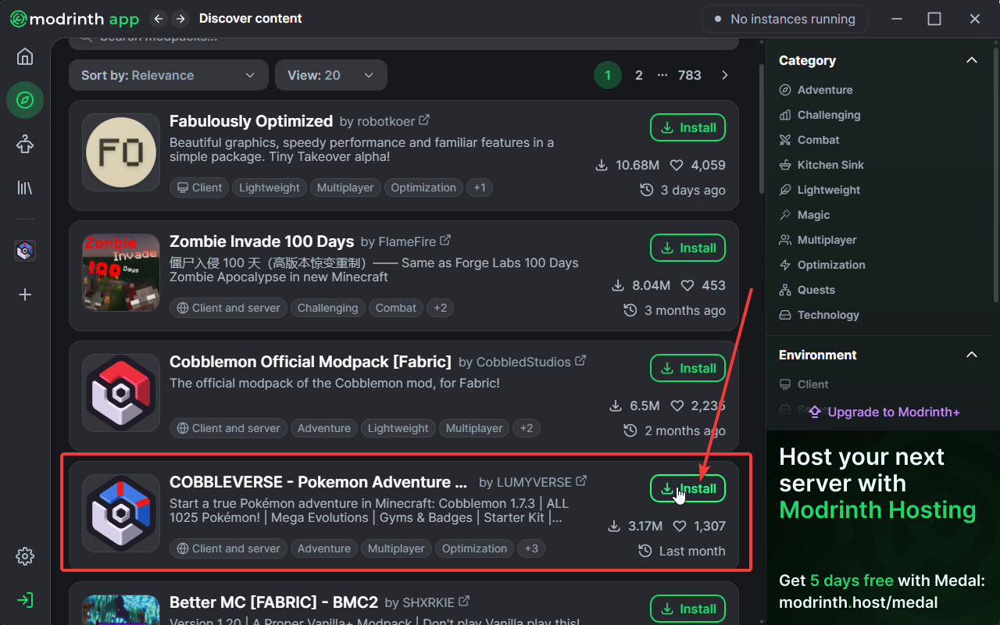
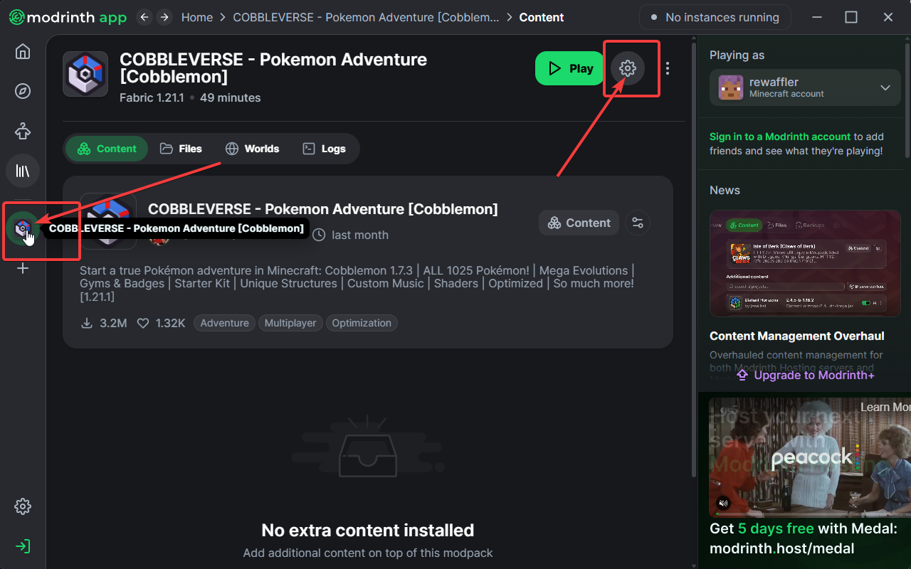
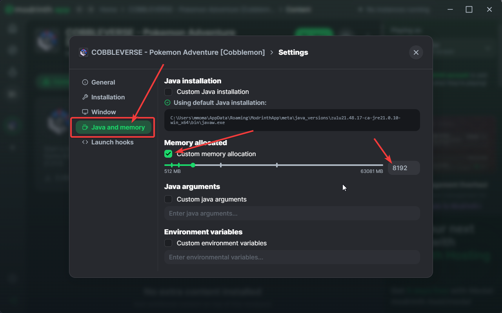

1
Download the Launcher
Start by downloading the app from the Modrinth homepage.

2
Discover Content
Click the Compass icon to browse the library.

3
Install the Modpack
Search for "COBBLEVERSE" and hit Install.

4
Instance Settings
Click the Gear icon to configure your instance.

5
Allocate Memory
Set Memory to 8192 MB under Java and memory settings.
